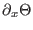
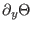
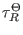
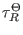
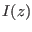

Next: The salinity equation (Source Up: Fortran: Module Interface Mean Previous: The vertical friction (Source Contents
INTERFACE:
subroutine temperature(nlev,dt,cnpar,I_0,heat,nuh,gamh,rad)DESCRIPTION:
This subroutine computes the balance of heat in the form
Horizontal advection is optionally
included (see obs.nml) by means of prescribed
horizontal gradients
 and
 and
calculated horizontal mean velocities  and
and  .
Relaxation with the time scale

towards a precribed profile
, changing in time, is possible.
.
Relaxation with the time scale

towards a precribed profile
, changing in time, is possible.
The sum of latent, sensible, and longwave radiation is treated as a boundary condition. Solar radiation is treated as an inner source, . It is computed according the exponential law (see Paulson and Simpson (1977))
Diffusion is numerically treated implicitly, see equations (7)-
(9).
The tri-diagonal matrix is solved then by a simplified Gauss elimination.
Vertical advection is included, and it must be non-conservative,
which is ensured by setting the local variable adv_mode=0,
see section 8.2.3 on page  .
.
USES:
use meanflow, only: avmolt,rho_0,cp
use meanflow, only: h,u,v,w,T,S,avh
use meanflow, only: bioshade
use observations, only: dtdx,dtdy,t_adv
use observations, only: w_adv_discr,w_adv_method
use observations, only: tprof,TRelaxTau
use observations, only: A,g1,g2
use util, only: Dirichlet,Neumann
use util, only: oneSided,zeroDivergence
IMPLICIT NONE
INPUT PARAMETERS:
number of vertical layers
integer, intent(in) :: nlev
time step (s)
REALTYPE, intent(in) :: dt
numerical "implicitness" parameter
REALTYPE, intent(in) :: cnpar
surface short waves radiation (W/m^2)
REALTYPE, intent(in) :: I_0
surface heat flux (W/m^2)
(negative for heat loss)
REALTYPE, intent(in) :: heat
diffusivity of heat (m^2/s)
REALTYPE, intent(in) :: nuh(0:nlev)
non-local heat flux (Km/s)
REALTYPE, intent(in) :: gamh(0:nlev)
OUTPUT PARAMETERS:
shortwave radiation profile (W/m^2)
REALTYPE :: rad(0:nlev)
REVISION HISTORY:
Original author(s): Hans Burchard & Karsten Bolding
$Log: temperature.F90,v $
Revision 1.20 2010-07-28 15:09:46 hb
Surface heat flux truncated when SST < freezing temperature
Revision 1.19 2008-03-07 17:57:49 hb
AdvBcup changed to oneSided
Revision 1.18 2007-01-06 11:49:16 kbk
namelist file extension changed .inp --> .nml
Revision 1.17 2006-11-06 13:36:45 hb
Option for conservative vertical advection added to adv_center
Revision 1.16 2005-12-02 21:03:03 hb
Documentation updated
Revision 1.15 2005-11-17 09:58:20 hb
explicit argument for positive definite variables in diff_center()
Revision 1.14 2005/11/15 11:39:32 lars
documentation finish for print
Revision 1.13 2005/09/12 21:46:46 hb
use of bioshade corrected (should work on short
wave length part of light spectrum only)
Revision 1.12 2005/06/27 13:44:07 kbk
modified + removed traling blanks
Revision 1.11 2004/08/18 12:31:52 lars
updated documentation
Revision 1.10 2004/07/28 11:29:10 hb
Bug removed, rad is not any more multiplied with bioshade;
bug found by Jorn Bruggeman, Amsterdam
Revision 1.9 2003/07/23 12:33:21 hb
fixed bioshade init and use
Revision 1.7 2003/04/05 07:01:16 kbk
moved bioshade variable to meanflow - to compile properly
Revision 1.6 2003/04/04 14:25:52 hb
First iteration of four-compartment geobiochemical model implemented
Revision 1.5 2003/03/28 09:20:35 kbk
added new copyright to files
Revision 1.4 2003/03/28 08:56:56 kbk
removed tabs
Revision 1.3 2003/03/10 08:50:07 gotm
Improved documentation and cleaned up code
Revision 1.2 2001/11/18 11:50:37 gotm
Cleaned
Revision 1.1.1.1 2001/02/12 15:55:57 gotm
initial import into CVS
Karsten Bolding 2012-01-24